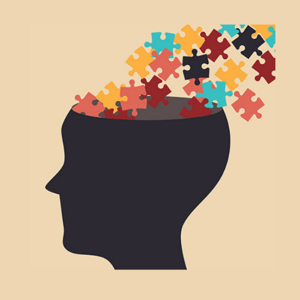

Adopting an upright seated posture in the face of stress can maintain self-esteem, reduce negative mood, and increase positive mood compared to a slumped posture. The research is consistent with embodied cognition theories that muscular and autonomic states influence emotional responding.
POSTURE
It’s important to know that a simple change in a person’s posture can make a difference in their daily life. Since there is a connection between a person’s posture and health (specifically mental health), sitting up straight can actually reduce some of the symptoms of depression/anxiety. Posture and physical health is sometimes overlooked in cases of depression. If a person’s body is not taken care of, their mind will be affected negatively as well.
POSTURE and MENTAL HEALTH

The science behind this connection may be surprising but sitting up straight can make all the difference. There is a link between posture and anxiety (and other mental conditions) as well.
Being slumped over can end up causing issues you may not be consciously aware of. Additionally, slouching over is seen as a position of defeat. This idea can end up seeping into your posture and thought processes. It is no wonder that negative emotions and past memories can begin to appear again if you are slouched over. Sitting up straight can help positive feelings and memories emerge instead of unmotivated/hopeless feelings.
POSTURE and ANXIETY
Anxiety, depression, and stress can all be problematic situations. Oftentimes, we may be harsh on ourselves and feel hopeless in the process. Not all hope is lost however, making small changes like sitting up with your back straight and being consistent can make a big difference.
Ways in which good posture can help you handle stress and keep you feeling positive while you work from home!
Greater Persistence
It’s extremely easy to feel overwhelmed by school on top of the millions of things
... It’s extremely easy to feel overwhelmed by school on top of the millions of things you might be worrying about. More often than not, there are times where you might feel like giving up. Managing your posture could potentially boost your endurance when things get tough.
Increased energy levels
While we usually consider posture while sitting, research shows that walking
... While we usually consider posture while sitting, research shows that walking posture can also affect your physical and emotional well-being. Those who maintained an upright posture reported feeling more powerful, less sleepy, and less negative emotions compared to those who walked in a slouched posture. By helping us reduce feelings like dread or nervousness, keeping an upright posture could aid us in handling stress and mental fatigue more effectively.
Likewise, individuals who indicated a history of depression, a slouched walking posture was associated with feelings of fatigue and lethargy in addition to decreased energy levels.
Increased positive emotions
Being a student is difficult, especially in these times of increased uneasiness. You
... or someone you know may have struggled with maintaining their mental health. It was found that sitting in an upright posture led to reduced fatigue and increased positive feelings in people with mild to moderate depression.